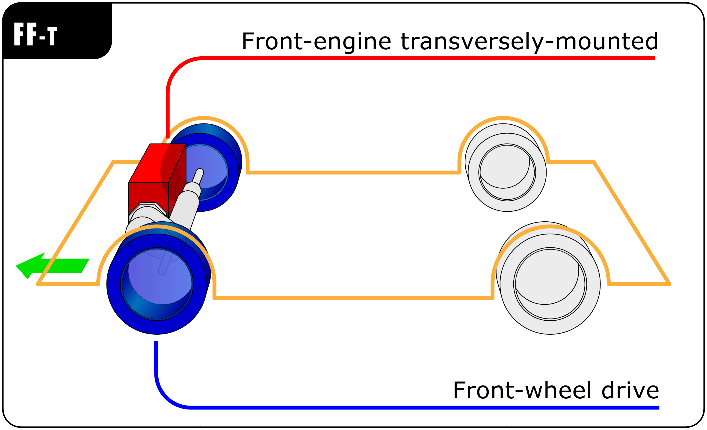
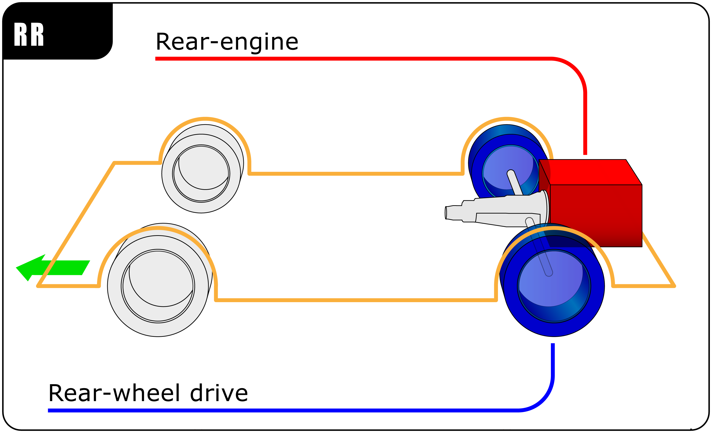
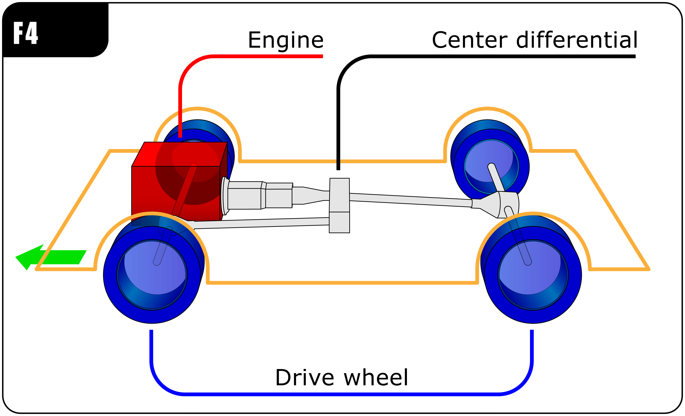
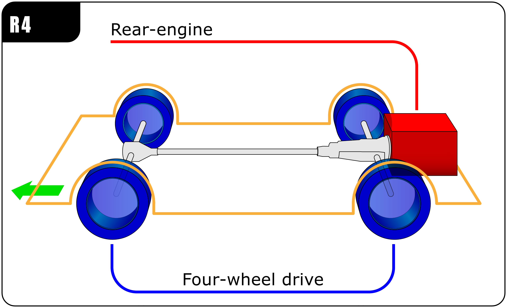
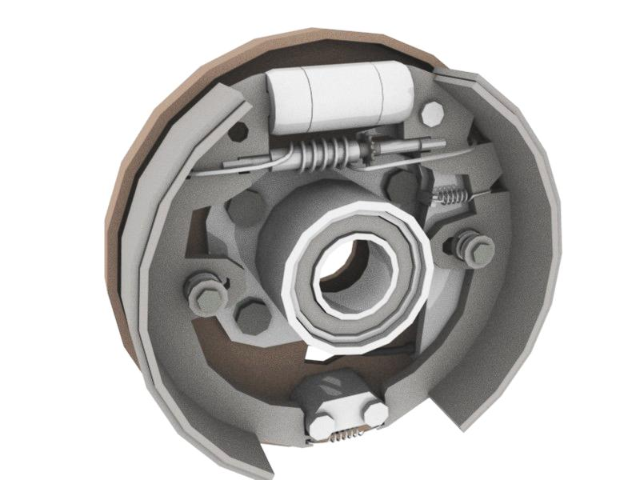
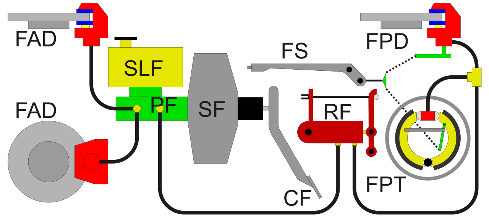
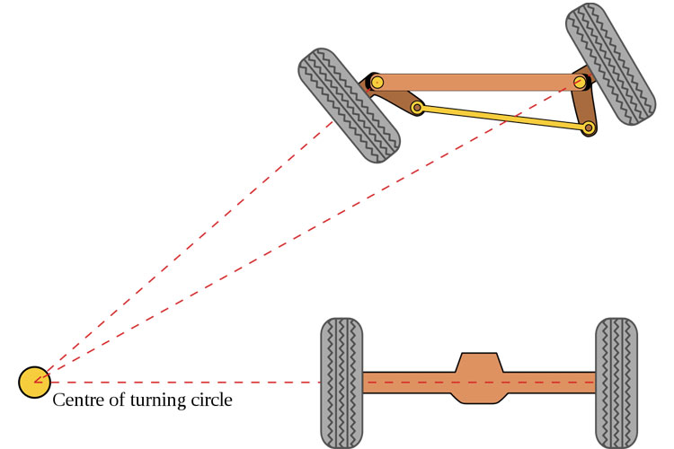
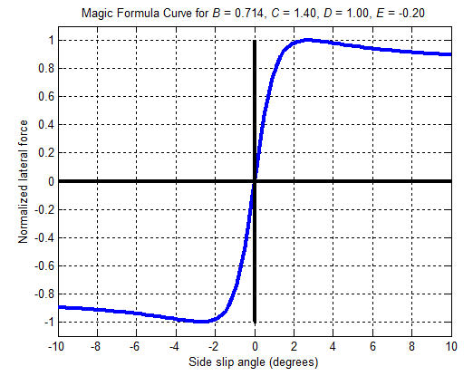
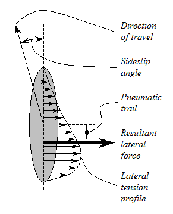

Vehicle dynamics is the study of vehicle motion, for example, how the vehicle's forward motion changes in response to driver input, propulsion output, control ambient conditions. Vehicle dynamics is a part of engineering based mainly on classical mechanical principles. It can be applied to motor vehicles (such as cars), bicycles and motorcycles, airplanes and ships.
There are many aspects that affect vehicle dynamics, they can be grouped into drivetrain and braking, suspension and steering, distribution of mass, and tires.
Automobile layout means the layout of the engine and wheels. They can be divided into; front-wheel drive(FWD), rear-wheel drive(RWD) and four-wheel drive (4WD).
Front-wheel drive layout:
Rear-wheel drive layout:
Four-wheel drive layout 1:
Four-wheel drive layout 2:

A brake is a mechanical device that inhibits motion by absorbing energy from the moving system. It is used to slow down or stop a moving vehicle, wheel, axle or to prevent its movement, usually achieved by friction.
Most brakes commonly use friction between two surfaces pressed together to convert the kinetic energy of the moving object into heat.
Drum Brake:
Braking system for cars:

Ackermann steering geometry is a design principle used in the front-wheel steering systems of vehicles, like cars, to help them turn smoothly and efficiently. It was invented by German engineer, Georg L. Ackermann in 1816 A.D.
Ackermann steering geometry is all about making sure that when a vehicle turns, the inside wheel and the outside wheel follow different paths. This is important because the wheels need to cover different distances during a turn, with the inside wheel traveling a shorter distance than the outside wheel.
Imagine you're driving a car and you want to make a sharp left turn. Ackermann steering ensures that the inside wheel turns at a sharper angle than the outside wheel. This helps both wheels cover the right distances and prevents them from sliding during the turn. When the wheels are aligned correctly with Ackermann steering, it makes turning smoother and reduces tire wear.

The center of mass in a car is a critical concept in vehicle dynamics and design. It refers to the point within the car where the entire weight or mass of the vehicle can be considered to be concentrated or balanced. It depends on the following factors:
i) Location- The center of the mass should be located somewhere around the middle of the car.
ii) Stability- A lower center of mass is crucial, as it determines more stability.
iii) Handling- A well distributed center of mass results in more responsive steering, braking, and acceleration.
Weight distribution is the distribution of weight inside a vehicle, especially cars, airplanes, and trains. Generally, it is written as x/y, where x is a percentage of front weight and y is a percentage of rear weight.
In a gravity-dependent vehicle, weight distribution directly affects various vehicle characteristics, including handling, acceleration, and traction. For this reason, the weight distribution varies according to the intended use of the vehicle.
Pacejka's Magic Formula, often referred to as the "Magic Formula," is a mathematical model used to describe and predict the tire forces and moments that come into play during vehicle dynamics, particularly in the context of tire behavior. It was developed by Hans B. Pacejka, a renowned tire dynamics researcher. The Magic Formula is widely used in the automotive industry and motorsport for various applications, including vehicle handling simulations, tire design, and control system development.
The general form of the Magic Formula, given by Pacejka, is:
y = D * sin{C*arctan[Bx-E*(Bx-arctan(Bx))]}
Magic Formula Curve:

Pneumatic trail, also known as trail, tire trail, or pneumatic trail effect, is an important concept in vehicle dynamics, particularly in the context of how tires interact with the road during steering. It's a key factor in determining a vehicle's stability and steering behavior. Pneumatic trail is created by the design of the tire itself. In most cases, the tire's contact patch (the part of the tire that touches the road) is slightly behind the steering axis. This means that when you turn the steering wheel, the tire has a tendency to "trail" behind the direction of the turn due to its contact point being behind the steering axis.
Tire Pneumatic Trail:
